Départ · Ta maison
 Mewgenics
Multi
Mewgenics
Multi
Chacun sa maison et ses chats, l’aventure ensemble !
Un mod coop non officiel pour jouer à Mewgenics de 2 à 4 joueurs.
Pour Mewgenics 1.1.21239 (Steam) · gratuit · toutes les versions
Pas encore le jeu ? Il est sur Steam.
Dernière version :
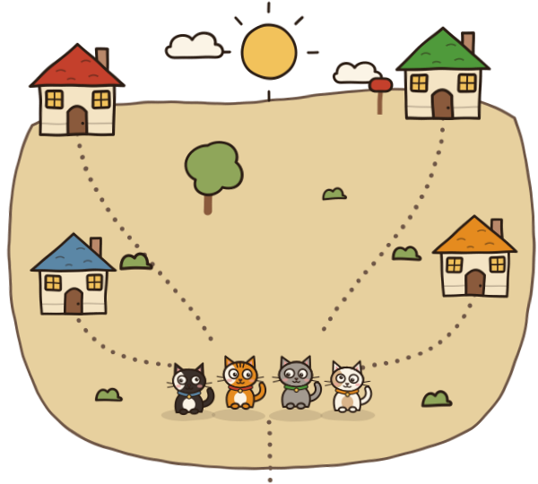
Le village
Ce que le mod apporte
Tout le jeu, mais avec tes amis.

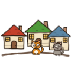
À 2, 3 ou 4
Chacun garde sa maison, ses chats et sa sauvegarde, copiée par sécurité avant toute modification.
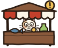
Un village partagé
Le monde de l’hôte est à tout le monde : PNJ, quêtes, boutiques, histoire et déblocages.
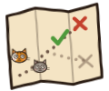
L’aventure ensemble
Chacun emmène ses chats. Combats synchronisés, chemin voté sur la carte, sac commun, butin partagé.
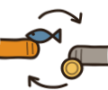
Des échanges
Passe objets, pièces et nourriture à tes amis. Chacun garde sa propre bourse.
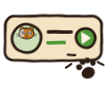
Un clic pour rejoindre
Depuis la liste d’amis Steam. Pas de port à ouvrir, pas de VPN.
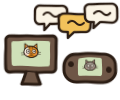
Partout, en dix langues
Windows, Linux et Steam Deck jouent ensemble, dans les dix langues du jeu.
La carte
Installer le mod
Choisis ta route : trois étapes, deux minutes.
Windows
Télécharge le zip Windows et extrais le dossier
mgmp, sur ton Bureau par exemple.-
Double-clique sur Mewgenics Multi.exe, le lanceur du mod. Il vérifie que tout est prêt ; s’il propose Réparer, clique dessus et accepte si Windows demande une autorisation.
Mewgenics Multi
- Steam ouvert
- Jeu trouvé
- steam_appid.txt
- Fichiers du mod
RéglagesJournaux
« Windows a protégé votre ordinateur » ? Clique sur Informations complémentaires, puis Exécuter quand même.
-
Clique sur Jouer. C’est parti !
Ton jeu n’est pas dans le dossier Steam habituel ? Réglages, Parcourir…, choisis
Mewgenics.exe, puis Enregistrer.
Linux / Steam Deck
Le jeu tourne avec Proton, comme d’habitude. Sur Steam Deck, passe en mode Bureau.
Télécharge le zip Linux. Dans Steam, clic droit sur Mewgenics › Gérer › Parcourir les fichiers locaux, et extrais le dossier
mgmpdans ce dossier, à côté deMewgenics.exe.-
Clic droit sur Mewgenics › Propriétés › Options de lancement : efface ce qu’il y a et colle cette ligne.
Options de lancement
bash -c 'exec "${@/Mewgenics.exe/mgmp/Mewgenics Multi.exe}"' -- %command% Lance Mewgenics depuis Steam : le lanceur du mod s’ouvre à sa place. Clique sur Réparer s’il le propose, puis sur Jouer.
Pour rejouer sans le mod, vide les options de lancement.
Le lanceur ne s’affiche pas ?
Mets plutôt cette ligne : le jeu démarre directement avec le mod.
bash -c 'exec "${@/Mewgenics.exe/mgmp/mgmp_loader.exe}"' -- %command%
Le combat
Jouer ensemble
Un hôte, jusqu’à trois amis, et c’est parti.
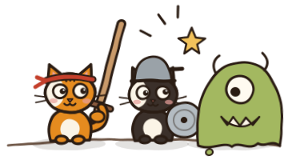
L’hôte clique sur Multijoueur, puis Héberger, dans le menu du jeu.
Ses amis, le jeu déjà lancé avec le mod, font un clic droit sur son nom dans la liste d’amis Steam : Rejoindre la partie.
Chacun choisit sa sauvegarde, et en route pour l’aventure !
Amis
Sans Steam : Multijoueur › Rejoindre, puis l’adresse de l’hôte, qui doit ouvrir le port TCP 27600 ou passer par un VPN. Tout le monde doit avoir la même version du jeu et du mod.
Retour à la maison
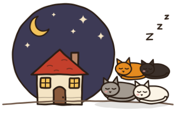
Crédits
-
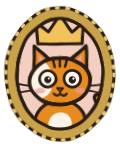
Hizu (Hizumimi)
Créateur de Mewgenics Multi.
-
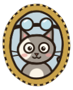
Auteur de mgmp, la base du mod : les combats et les aventures synchronisés à deux (licence MIT). Merci !
Mewgenics est un jeu d’Edmund McMillen et de Tyler Glaiel. Ce mod non officiel n’a aucun lien avec ses auteurs ; il ne contient aucun fichier du jeu et utilise le jeu installé sur ta machine. Images du jeu affichées depuis Steam, © leurs auteurs.
Le code source est sur GitHub, sous licence MIT.